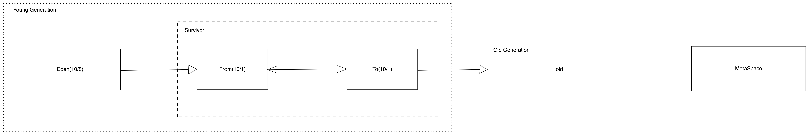

生产有应用频繁的fullgc，怀疑系统存在异常。
jvm参数配置
首先大概文字介绍下系统的jvm参数配置：
老年代CMS收集器
堆大小4G 年轻代2G 老年代2G 元空间256M
S0:S1:Eden=1:1:8，Eden=2G*0.8=1.6G
CMS GC阈值是70%，即2G*0.7=1.4G
也就是老年代达到1.4G时，年轻代满的话再往老年代晋升对象的时候，会发生FGC
年轻代默认晋升年龄是15次
再来温故下堆内存空间结构：

分析
接下来，dump内存，这里注意一点，dump时切记让运维同学把dump的机器从集群中摘掉，否则dump时会造成JVM线程停顿，导致超时告警，影响业务。dump结果使用MAT(Eclipse Memory Analyzer)分析，具体截图就不展示了，从支配树上可以看出，某个缓存对象占用空间很大，个数非常多。从业务代码中查看，发现该对象是个本地缓存对象(Guava Cache)，缓存3分钟，而且是个配置项，按照不同业务线、城市，总共才500个，每个配置项比较小，怎么会突然占用这么大空间呢？
使用jstat命令查看系统的垃圾回收统计情况，发现YGC大概每10s一次，对于一个对象，即在年轻代中驻留约15*10=150s，再晋升到老年代，也就是在缓存有效期内，缓存对象足够晋升到老年代，缓存失效时，则会创新创建对象放入缓存。初步结论是：缓存过期时间过小导致对象晋升到老年代过快。
解决
根据该业务场景，设置缓存永不过期。
结论
在使用本地缓存时，一定要注意缓存时间设置，否则会导致对象晋升到老年代过快而频繁导致FGC，根据实际的业务场景需要，可以把缓存设置永不过期（缓存的更新可以用定时任务去更新或者配置变更时通过消息方式去更新本地缓存），或者过期时间设大些。